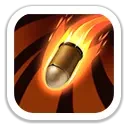
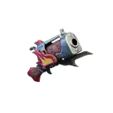
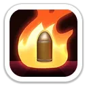

Руфус — стрелок 11 поколения и главный дальний дамагер поколения. Он поджигает область в Арене, повышает атаку всего марша, усиливает атаки стрелков и увеличивает получаемый целью урон. Особенно ценен в атакующих сборах и на Свирепом медведе.
ПолучениеЗал героев, Литейный цех и универсальные мифические осколки
Главная рольАтакующий сбор, Свирепый медведь, PvP и Арена
Для F2PСильный, но дорогой герой без Колеса удачи; сначала обычно Элеонора
Проверено23 октября 2026
Характеристики
Максимальные значения героя по актуальным карточкам.
18 042Атака героя
14 850Защита героя
111 388Здоровье героя
1 281,02%Атака стрелков
1 281,02%Защита стрелков
Навыки Освоения
Руфус давит заднюю линию массовым уроном и горением, а затем добивает частыми критическими ударами.

Удар звездопада
Урон по области · горение
Руфус обрушивает гранаты на область. После взрыва земля горит ещё 2 секунды и наносит периодический урон каждые 0,5 секунды.
Атаки всех войск имеют 20% шанс запугать противника и на 2 хода снизить его смертоносность.
Смертоносность врага −10 / 20 / 30 / 40 / 50%
Уточнение по «Разрушению брони»: русская карточка источника содержит старую текстовую ошибку про пехоту. Несколько актуальных баз 2026 описывают механику как усиление атак стрелков, что совпадает с самим описанием бронебойных патронов Руфуса.
Эксклюзивное снаряжение

Метеорный бластер
Максимальные базовые бонусы карточки: +3 652 атаки, +3 010 защиты, +22 578 здоровья героя, +320% смертоносности и +320% здоровья войск.

Уголёк конфликтаНа максимуме обычные атаки поджигают цель и наносят 30% атаки Руфуса в секунду в течение 2 секунд.
Пылающий легионНа максимуме повышает атаку войск в сборе на 15%.
Где использовать Руфуса
Свирепый медведь
Одна из лучших ролей Руфуса. +25% атаки всему маршу, усиление стрелков, дебафф получаемого урона цели и +15% атаки сбора от эксклюзивки работают на чистый урон.
Атакующий сбор
Очень силён как лидер: повышает атаку, усиливает стрелков и открывает цель для дополнительного урона всего сбора.
PvP
Сочетает высокий урон с защитным дебаффом: 20% шанс снизить смертоносность врага до −50% на 2 хода.
Арена
Метеорный взрыв, горящая зона, осколки и до +20% к шансу крита дают мощный массовый урон с задней линии.
Приоритет прокачки
1Полк ИнферноСтабильные +25% атаки всем войскам, особенно ценно в Медведе и сборах.
2Разрушение брониУсиливает стрелков и заставляет цель получать до +25% урона.
3Удар звездопадаГлавный массовый навык Руфуса для Арены и Освоения.
Плюсы и минусы
Плюсы
До +25% атаки всем войскам.
Очень сильный герой для Свирепого медведя и атакующего сбора.
«Разрушение брони» повышает получаемый целью урон до +25%.
До −50% смертоносности врага при срабатывании «Гневного землетрясения».
Сильный массовый урон и горение в Арене.
Эксклюзивка даёт ещё +15% атаки войск сбора.
Минусы
Нет Колеса удачи, поэтому для F2P значительно дороже Элеоноры.
Третий навык Экспедиции зависит от 20% шанса.
Для максимальной силы атакующего сбора важно эксклюзивное снаряжение.
На ранней прокачке может уступать уже хорошо развитому стрелку предыдущего поколения.
Итог
Руфус — главный атакующий стрелок 11 поколения и один из лучших кандидатов на вложения после Элеоноры. Если важны Свирепый медведь, атакующие сборы и высокий урон в PvP, он ценнее Ллойда. Для F2P порядок обычно такой: сначала доступная через Колесо удачи Элеонора, затем уже дорогой Руфус, если хватает ресурсов.